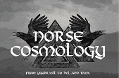

Current Lectures
Scandinavian History & folklore

×
 Reclaiming the Runes- Separating Viking Culture from Modern Hate Groups. Hate groups have co-opted Viking Runes to express their vile message of Aryan and Racial supremacy. How the hell did THAT happen? This presentation discusses the history surrounding the roots of this ideology, who started it, how it was put into place, why it has held on, and most importantly what society can do to RECLAIM Nordic culture from them.
❮
❯
Reclaiming the Runes- Separating Viking Culture from Modern Hate Groups. Hate groups have co-opted Viking Runes to express their vile message of Aryan and Racial supremacy. How the hell did THAT happen? This presentation discusses the history surrounding the roots of this ideology, who started it, how it was put into place, why it has held on, and most importantly what society can do to RECLAIM Nordic culture from them.
❮
❯
1 / 4
Who are these people? What were they like? We’re they all grim axe wielding brutes, or were they more complex? This brief presentation illuminates Viking culture through a historical lens, from civil society to savage foes.
2 / 4
Viking influences found in modern music, art, literature, and visual media. The Viking Age ended over 700 years ago, so why do we still find them fascinating? See how the great warriors and explorers of a bygone age have left their mark on the modern era, and will continue to do so for another 700 years.
3 / 4
Reclaiming the Runes- Separating Viking Culture from Modern Hate Groups. Hate groups have co-opted Viking Runes to express their vile message of Aryan and Racial supremacy. How the hell did THAT happen? This presentation discusses the history surrounding the roots of this ideology, who started it, how it was put into place, why it has held on, and most importantly what society can do to RECLAIM Nordic culture from them.
4 / 4
From Yggdrasil to Hel and back. Walk among the branches of the Great Norse Tree and visit the lands found in the Norse Cosmology. From Great Halls to the Lands of the Frost Giants, no stone is left unturned in this unique and curious adventure.
Past Lectures
The Greatest War 1915 – 1946
- 30 years of Hell-the World at War
- Every 30 seconds- the Battle of Verdun
- Many Heroes, Many Nations – WWII Heroes from all over the world
Work in Progress
- Vikings in Video Games
- The Whole Fam Damily- Norse Deities beyond Odin, Thor, and Loki